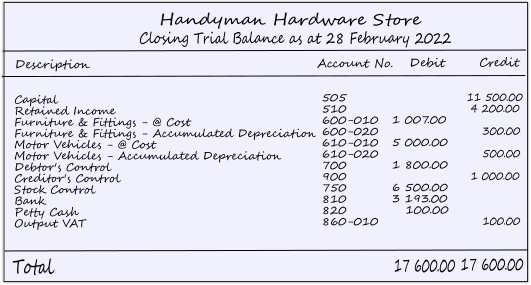
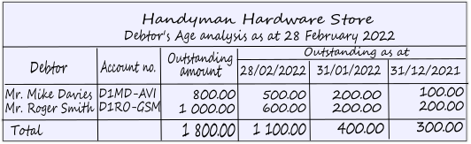
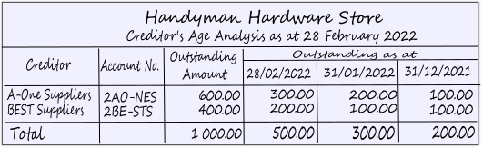
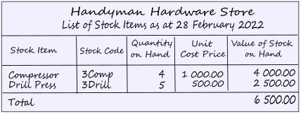

Take-on Opening Balances
Commencing the use of osFinancials need not coincide with the commencement of business operations. osFinancials may be implemented at a later time. Nonetheless, it is likely that the closing balances of your existing ledger accounts, obtained from your Set of Books either from a manual or computer system, must be recorded in osFinancials. These balances are referred to as opening balances. To ensure the efficiency of the system, it is advisable to enter these balances at the time of system setup.
The latest trial balance from your previous accounting system, will provide the necessary information for opening balances. In cases where the business has been running for an extended period, it is recommended that the trial balance figures from the preceding year be entered into the osFinancials. Suppose your financial year commences on 2022/03/01, in that case, it is ideal to record your opening balances using the date 2022/02/28, providing an opportunity for a comparison between the prior year and the current year.
Should the trial balance figures of the previous financial year be entered, osFinancials will perform a net profit/loss calculation and allocate the result to the Retained Income account. However, it will not transfer the expense figures to the current year.
The completeness of your set of accounts depends on the entry of opening balances. Should you fail to enter these balances, your accounts will remain incomplete. However, if you are commencing a new business venture, it would be unnecessary to enter any opening balances since none are in existence.
If you do not enter any opening balances, your set of accounts will not be complete. However, if it is a brand new business you are starting, it will obviously not be necessary to enter any opening balances, as you will not have any.
|
|
The opening balances are captured in the General journal. |

Opening Balance - Configuration of osFinancials
Transitioning to a new accounting system like osFinancials requires careful preparation and data migration. Here are the essential steps to take when setting up your new system and adding opening balances:
- Prepare Your Data:
- On your old accounting system, prepare and finalise all outstanding transactions, adjustments to prepare financial statements like, the trial balance, income statement and balance sheet. This step is necessary to eliminate any duplicates or errors.
- Back up your data from the old accounting system to ensure you have a safe copy of your financial records.
- Gather the necessary data to configure osFinancials and process opening balances.
- Configure Chart of Accounts:
- Set up your Chart of Accounts in osFinancials to match your business's financial structure. You may need to refer to your previous system's Chart of Accounts and trial balance for guidance.
- Create or add the necessary accounting groups to classify your accounts and link the account groups to the financial categories such as income, expense, asset, liability, and equity. This will ensure that your accounts are properly structured, categorized and labelled.
- Add Debtor Accounts:
- Setup a default debtor account to capture the total opening balance of the debtors ledger of your customers and clients. This account will be necessary to take on the total opening balance of the debtors control account of the debtors' ledger in the general ledger. Once this is done, you need to Take on the individual balances of your once your individual debtor (customer / client) accounts is added in osFinancials.
- Set up your debtor accounts for your customers and clients into osFinancials. This includes accurate details such as customer names, contact information such as contactpersons, postal and delivery address information, payment terms, and credit limits, interest rates, discounts, etc.
- Use your old system's debtor records as a reference to maintain consistency.
- Add Creditor Accounts:
- Set up creditor accounts for your suppliers and vendors.
- Enter supplier information, contact details, payment terms, and any outstanding amounts.
- Verify the accuracy of this information against your previous system's creditor records.
- Import Stock/Inventory Data:
- Transfer your stock or inventory data into osFinancials. This includes product names, descriptions, quantities, costs, and selling prices.
- Ensure that your stock data aligns with your existing inventory levels.
- Take On Opening Balances:
- Once your master files (Chart of Accounts, debtor accounts, creditor accounts, and stock) are correctly configured and populated, you can proceed to enter opening balances.
- Record the opening balances for your debtor accounts, creditor accounts, and inventory.
- These balances should reflect the outstanding amounts owed to you by customers, the amounts you owe to creditors, and the value of your existing inventory at the start of your osFinancials accounting.
- Verification and Reconciliation:
- Verify that the opening balances you've entered match the figures from your old accounting system.
- Reconcile your accounts to ensure accuracy and to identify any discrepancies that need correction.
- Test Transactions:
- Conduct test transactions to make sure your new accounting system is functioning correctly.
- Verify that your opening balances are correctly carried forward in your financial reports.
- Training and Familiarization:
- Ensure that your team is familiar with osFinancials and its features. Provide training as necessary to ensure efficient operation.
- Documentation:
- Maintain documentation of the entire setup process, including the configuration, data migration, and opening balances.
- Keep records of any issues encountered and how they were resolved.
By following these steps, you can successfully set up osFinancials, add your master files, and take on opening balances from your previous accounting system, ensuring a smooth transition to your new financial software.
Which records is required from your previous accounting system to take on opening balances in osFinancials?
When transitioning to a new accounting system like osFinancials and taking on opening balances, you will need certain records and information from your previous accounting system. Here are the essential records and data you should have:
- Trial Balance: Obtain a copy of the trial balance from your previous accounting system. This trial balance should include the closing balances of all your accounts at the end of the previous accounting period. It will serve as a starting point for entering opening balances in osFinancials.
- Chart of Accounts: Ensure you have a detailed list of your chart of accounts from the previous system. This list should include the account names, account numbers, and account types (e.g., assets, liabilities, equity, revenue, expenses).
- Debtor (Accounts Receivable) Reports: These reports show the outstanding amounts that your customers owe you. It's important to have records of outstanding customer invoices, sales orders, and customer statements as of the transition date. This information is necessary for accurately setting up your accounts receivable balances and creating accurate opening balances for your debtor accounts in osFinancials.
- Creditor (Accounts Payable) Reports: These reports show the outstanding balances you owe to your suppliers or creditors. You should obtain records of outstanding invoices, bills, and supplier statements as of the transition date. This information is necessary for accurately setting up your accounts payable balances and creating accurate opening balances for your creditor accounts in osFinancials.
- General Ledger Transactions: Depending on the complexity of your accounting, you might need access to detailed general ledger transactions for the accounts you're transferring. This is especially important if you have complex transactions, accruals, or prepayments that need to be accurately carried forward.
- Debtor (Customer/Client) Information: Information about your debtors (customers/clients), including contact details, credit terms, and outstanding balances, can be helpful for setting up accounts receivable and accounts payable in osFinancials.
- Creditor (Supplier/Vendor) Information: Information about your creditors (suppliers/vendors), including contact details, credit terms, and outstanding balances, can be helpful for setting up accounts receivable and accounts payable in osFinancials.
- Customer Invoices and Statements: It can be helpful to have copies of customer invoices and statements, particularly if there are any discrepancies or disputes that need to be resolved during the transition.
- Supplier Invoices and Statements: It can be helpful to have copies of supplier invoices and statements, particularly if there are any discrepancies or disputes that need to be resolved during the transition.
- Aged Receivables Report: An aged receivables report shows how long each receivable has been outstanding. It can be useful for accurately ageing your outstanding debtor balances in osFinancials, especially if you plan to use the ageing facility in osFinancials.
- Aged Payables Report: An aged payables report shows how long each payable has been outstanding. It can be useful for accurately ageing your outstanding creditor balances in osFinancials, especially if you plan to use the ageing facility in the osFinancials.
- Tax Records: Ensure you have records of any outstanding sales tax or value-added tax (VAT) liabilities to accurately reflect your tax obligations in osFinancials.
- Asset and Liability Information: If you have assets or liabilities with specific details (e.g., depreciation schedules for assets, loan details for liabilities), gather this information to accurately carry it forward in your new accounting system.
- Bank Statements: If your bank account balances are part of your opening balances, obtain copies of your bank statements to reconcile and verify the balances.
- Opening Inventory Balances: If you manage inventory, you'll need records of your opening inventory balances to accurately reflect your inventory assets.
- Employee Records: If you handle payroll in your accounting system, ensure you have employee records, payroll tax information, and year-to-date payroll figures to transfer into osFinancials.
Having these records and data readily available will make the process of taking on opening balances in osFinancials smoother and more accurate. It's essential to maintain accuracy during the transition to ensure the continuity of your financial records and reporting.
===
When converting a Set of Books from other accounting systems, to osFinancials, all balances and transactions are automatically included. Nevertheless, if the decision is made to use osFinancials while possessing balances in a manual system or a different computerized accounting system, the balances from the prior accounting system must be entered.
Example: Take on Opening Balances for Debtors
A simplified example of the transactions to take-on opening balances for Debtors (customers/clients) can be followed in the HANDYMAN, HANDYMAN-A and HANDYMAN-B tutorials which may be downloaded fro free using the option "Let osFinancials help you to create a Set of Books?" option.
To illustrate the entry of opening balances, this documentation will utilize the following examples:
General ledger : The Trial balance:
|
 |
Control accounts: Individual balances needs to be taken on separately for the following Control accounts:
Control accounts in the General ledger must always be in balance with the total of the sub-ledgers. |
Debtor's ledger : The Balances of the individual Debtor accounts:
|
 |
Debtor's ledger: Individual balances may be taken on for the following:
|
Creditor's ledger : The Balances of the individual Creditor accounts:
|
 |
Creditor's ledger: Individual balances may be taken on for the following:
|
Stock Ledger: The Balances (Quantities and Cost prices) of the Individual Stock items:
|
 |
Stock Ledger / Inventory Ledger: Only the total value (cost price of inventory) is entered as the opening balance of your inventory items. The number of units and value of the individual inventory items (cost of inventory) is entered when you record your opening inventory. The total quantities and the total value of the inventory at cost must match the total amount of the Stock control account as the opening balance of your inventory. |
|
|
The opening balances for your stock items must be entered for each individual stock item - you cannot simply enter the total from the trial balance. You need to specify the quantities on hand and the cost prices for each stock item. osFinancials will calculate the value of each stock item by multiplying the quantities on hand by the cost price. After all the quantities and cost prices of your stock items are entered, the total value of all stock items should be equal to the control figure (stock control account), as per your financial statements. |